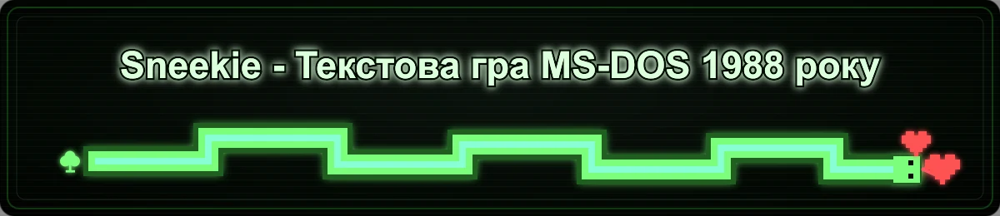
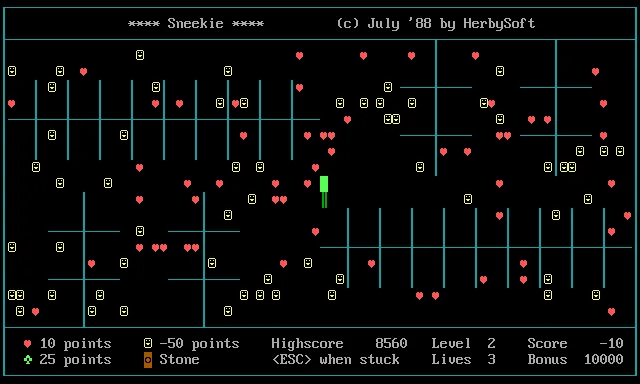
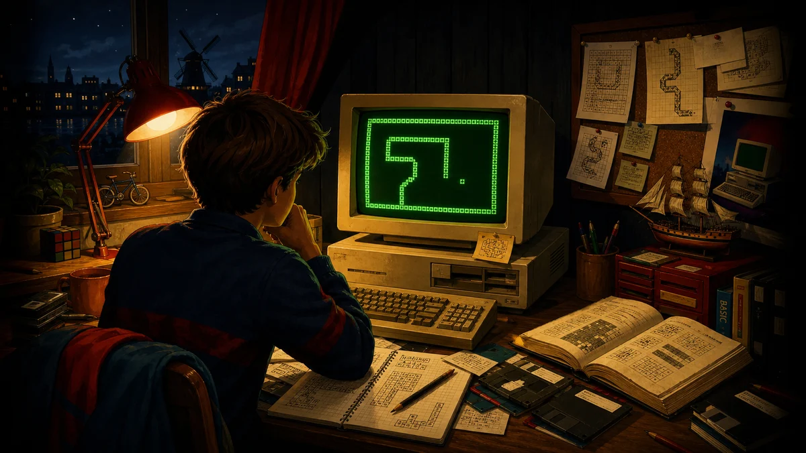
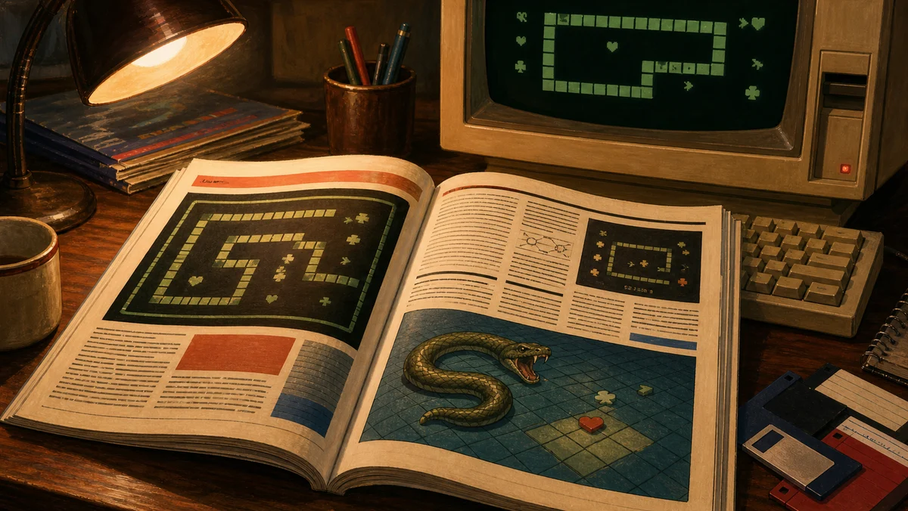
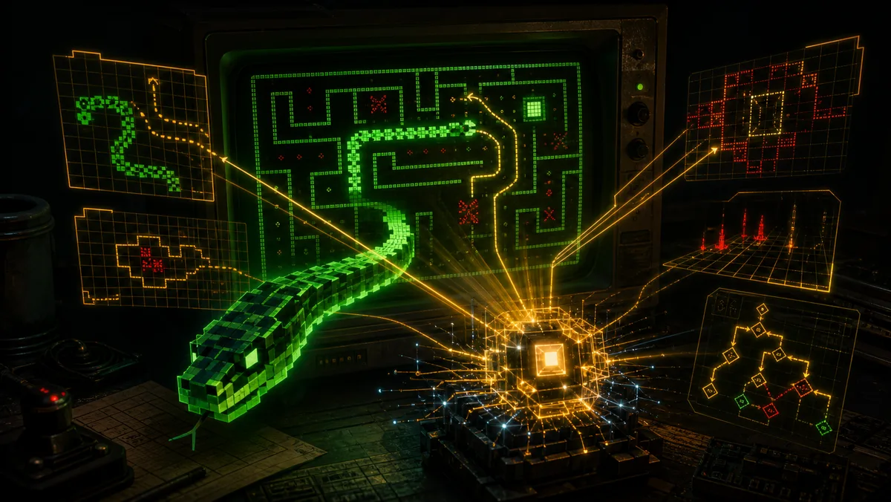
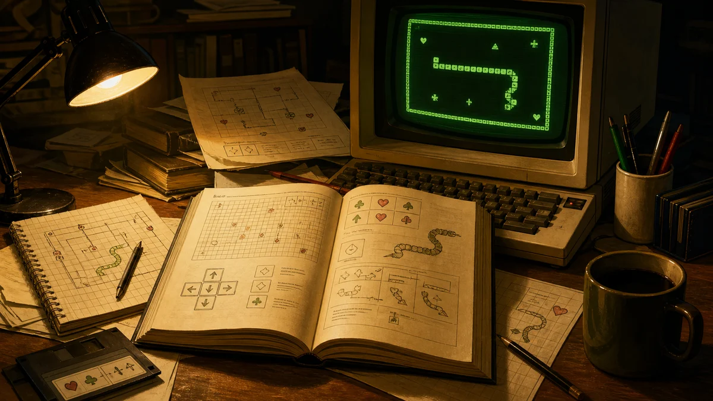
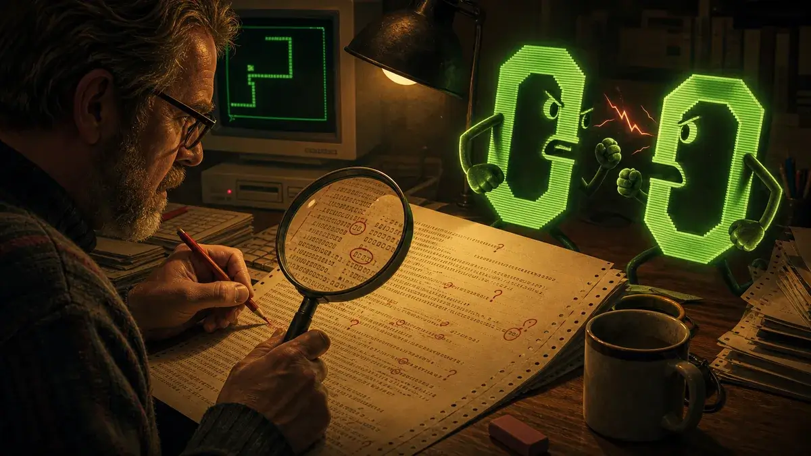
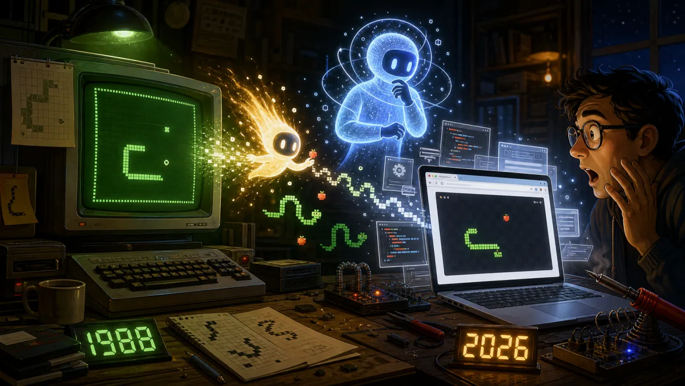

Sneekie
Sneekie - Текстова гра MS-DOS 1988 року

Запустіть Sneekie у браузері й проведіть змію крізь усі 32 рівні лабіринту, не врізаючись у стріли, камені чи власний хвіст, що росте.
Натисніть зображення нижче, щоб почати гру.

Перегляньте проєкт
Грати у гру
Запустіть точний браузерний порт і проведіть Sneekie крізь усі 32 рівні лабіринту з оригінальної гри 1988 року.
Історія
Історія веде Sneekie від BASIC-літа 1988 року через публікацію в журналі, OCR-відновлення і браузерний порт 2026 року.

Журнал
Подивіться оригінальні сторінки MS(X)DOS Computer Magazine, включно з надрукованим лістингом, який зберіг Sneekie майже сорок років.

Код
Відновлений GW-BASIC-лістинг показано як чистий підсвічений код зі збереженою початковою структурою номерів рядків.
Бот
Подивіться, як сучасний планувальник керує справжньою грою на цій самій сторінці і проходить глибокі рівні тими самими клавішами, що й гравець.

Посібник
Посібник охоплює керування, очки, небезпеки, ворогів і галерею лабіринтів, щоб правила 1988 року знову були зрозумілими.

Пояснення
Пройдіть BASIC-лістинг розділ за розділом з анотаціями, які пояснюють, що робить кожен діапазон рядків у грі.

Міграція
Порівняйте оригінальний GW-BASIC і JavaScript-порт поруч, щоб побачити, як ті самі ідеї перейшли в браузер.

VRAM-візуалізатор
Візуалізатор перетворює модель прямої відеопам'яті на інтерактивну пісочницю, де видно кожен peek і poke.